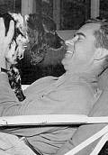

Thursday, July the 21st, 2005
back to: title, date or indexes
Elsewhere in Further Science Book 20, Norman Davies has a section on dogs, which begins, enigmatically, “That the fact that sea centuries old wood when broken, is fresh orange and turns grey in 40 seconds, then black, is significant”. That may well be so, but it is not really pertinent to this paragraph. Nevertheless, while we are on the subject of dogs, it gives me great pleasure to include this photograph of Richard Milhous Nixon with his legendary pooch, Checkers.
